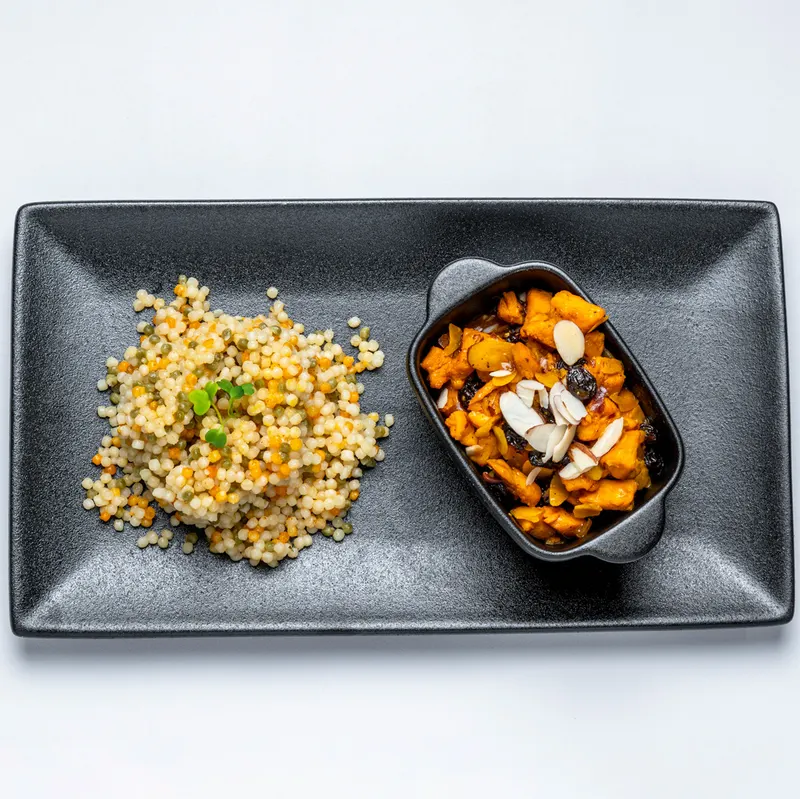
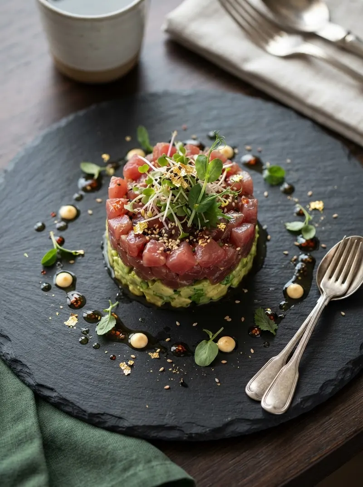
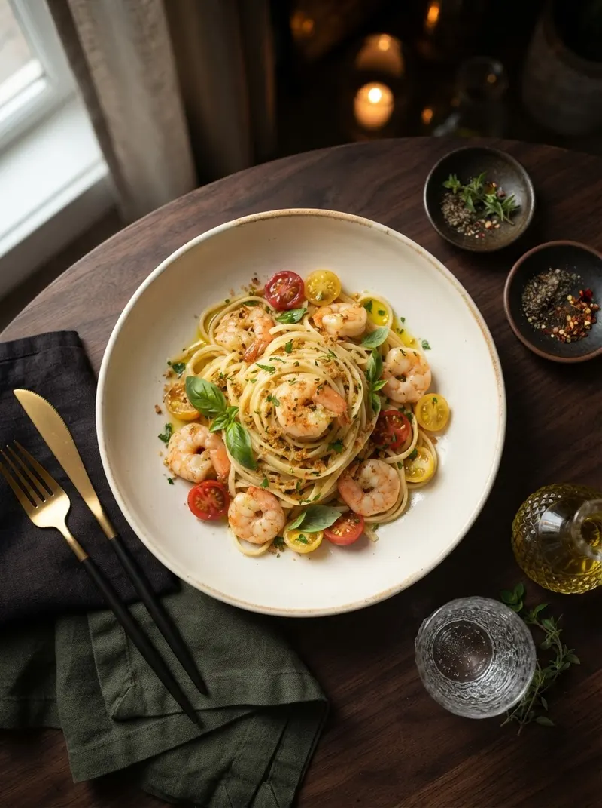
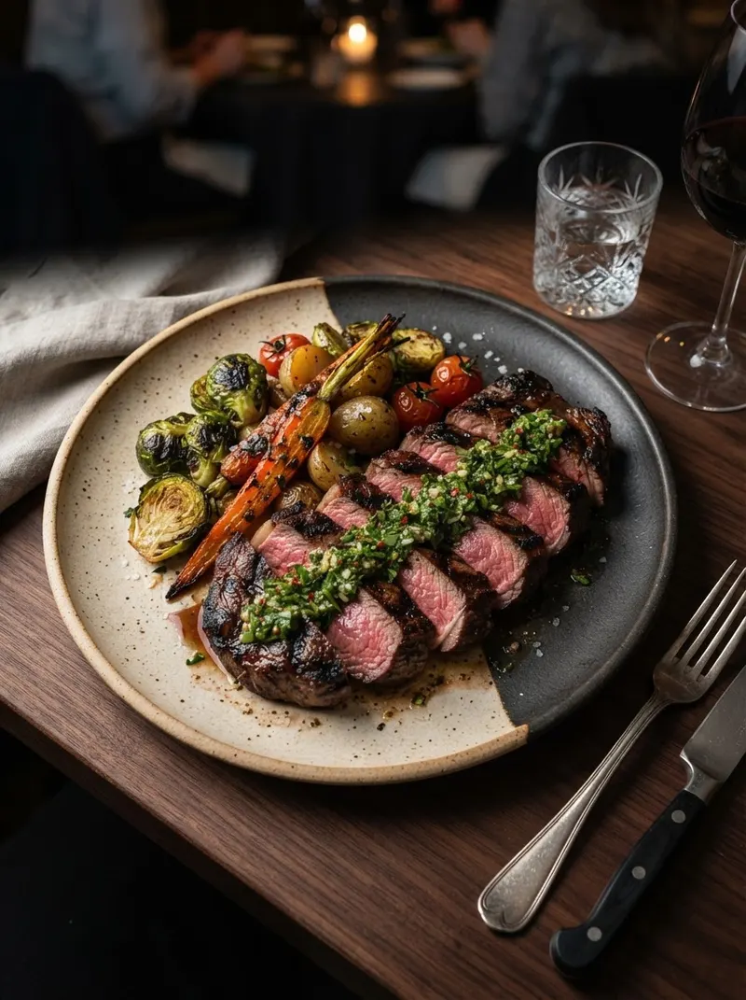

Carnes y aves
Pollo marroquí
RD$1,078Salteado con azafrán, almendras y pasas, con cous cous israelí.
Cocina internacional en la Torre Piantini. Almuerzo, cena y celebraciones con vino y cócteles.

El menú de Allure Bistro Café va de las tapas para compartir a las carnes Angus al grill, con pastas, risottos y mariscos.

Carnes y aves
Salteado con azafrán, almendras y pasas, con cous cous israelí.

Pastas

Carnes y aves
Con arroz con maíz y tocineta.
Ensaladas
Rúcula fresca, almendras, cranberries, blue cheese y tortilla strips.
Del mar
Risottos y arroces
Con champiñones y vino tinto.
Allure prepara la mesa para cumpleaños, reuniones familiares y cenas de negocios en la Torre Piantini.
Celebraciones personales con un servicio atento.
Reuniones íntimas, sin prisa y en un ambiente tranquilo.
Eventos corporativos y cenas de negocios.
El tema que más se repite en las reseñas de Allure Bistro Café es el ambiente tranquilo.
“Allure Bistro Café es simplemente excepcional.”Alan D., reseña en Google
“Very good food, very appropriate atmosphere.”Victor P., reseña en Google